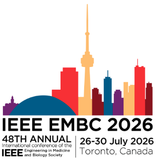

President of the Institute of Textile Science (ITS) | Innovating at the Intersection of Materials Science, Healthcare, and Textile Engineering
I am a materials scientist and textile engineer with over a decade of experience spanning academic research, industrial manufacturing, and higher education. Currently serving as a Postdoctoral Research Fellow at the University of Toronto's Institute of Biomedical Engineering and the KITE Research Institute (UHN), my mission is to design intelligent, user-centered wearable technologies that improve patient outcomes.
My career is built on a unique triad of expertise: rigorous academic research, practical industrial application, and a deep commitment to scientific knowledge mobilization.
Leading Canada's national textile organization, driving initiatives for textile innovation, research collaboration, and industry advancement across the country.
Visit Institute of Textile Science →
Theme: From Fashion to Function: User-Centered Smart Textiles for Healthcare. Curating and editing content for this focused track at the flagship IEEE EMBS conference.
View Editorial Board →